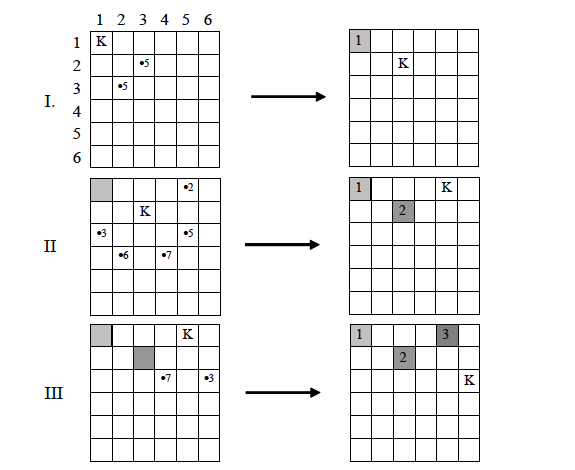
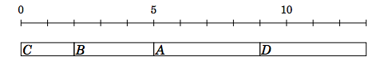
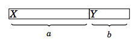
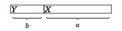

10. Алчни алгоритми
Ще разглеждаме задачи, в които се търси оптималното в
множество от възможни решения.
- При метода търсене с връщане, за да се намери оптималното
решение, е необходимо да се намерят решенията на всички подслучаи
на задачата (не непременно оптимални). Основен недостатък е, че
някои от тях евентуално биват пресмятани многократно.
- Повторното пресмятане на едни и същи подслучаи може да се
избегне, като се приложи динамично оптимиране, но за нещастие
последното е свързано с необходимост от достатъчно памет за
запазване на резултатите.
- Евристичният алгоритъм се насочва към един от всичките
подслучаи на задачата и решава единствено него с надеждата, че той
ще се окаже правилният. Изборът на този подслучай се извършва въз
основата на локален критерий за оптималност.
Алчните алгоритми (greedy algorithms) правят най-добрия за
момента избор:
- локално е съвсем лесно и разумно,
- глобално, на по-късен етап може да се окаже, че този избор не е
бил най-подходящият.
Алчните алгоритми:
+ се съставят лесно, обикновено реализацията на алгоритъма
не е сложна;
- не винаги намират оптималното решение на задачата;
+ бързо намират решение, близко до оптималното.
Задача за монети - минимален брой
[9.1]
Задача: Да се намери начин за получаване на дадена сума m,
като се използват минимален брой банкноти и монети, с номинали от
множеството C = {a1, a2,
..., an}.
Алгоритъм: На всяка стъпка избираме най-голямата
възможна стойност.
Пример: Стойностите са 1, 2, 5, 10, 20, 50 лева, m
= 134.
Решение: s = 0;
134 > 50, s = 50;
134-50 = 84 > 50; s = 100;
84-50 = 34 > 20, s = 120;
34-20 = 14 > 10, s = 130;
14-10 = 4 > 2, s = 132;
4-2 = 2, s = 134.
2x50 + 20 + 10 + 2x2 = 134 (6 банкноти) - оптимално
решение
Пример: Стойностите са 2, 5, 20, 30 лева, m =
40.
Решение: s = 0;
40 > 30, s = 30;
40-30 = 10 > 5, s = 35;
10-5 = 5, s = 40.
30 + 2x5 = 40 (3 банкноти) - не е оптимално; 2x20 =
40 (2 банкноти) - оптимално решение.
Пример: Стойностите са 2, 5, 20, 30 лева, m =
6.
Решение: s = 0;
6 > 5, s = 5;
6-5 = 1 < 2
няма решение; 3x2 = 6 - оптимално (единствено)
решение.
Пример: Стойностите са 2, 5, 20, 30 лева, m =
11.
Решение: s = 0;
11 > 5, s = 5;
11-5 = 6 > 5, s = 10;
6-1 = 1 < 2
няма решение
Общо решение с пълно изчерпване (генериране на всички
подмножества).
Решение с динамично оптимиране.
Египетски дроби [9.1.1]
Древните египтяни са използвали означение само за дробите с числител
единица. Всяка друга дроб p/q представяли и записвали като
сума от такива дроби (с числител единица). Например, 7/9 може да се
представи като сума по някой от следните начини:
7/9 = 1/3 + 1/3 + 1/9
7/9 = 1/2 + 1/4 + 1/36
7/9 = 1/9 + 1/9 + 1/9 + 1/9 + 1/9 + 1/9 + 1/9
Задача: Дадени са две естествени числа p и q (0
< p < q; ). Да се намери представяне на дробта p/q
във вид на сума:
p/q = 1/a1 + 1/a2 + ... +
1/an,
при което знаменателите a1, a2,
..., an да бъдат различни.
Алгоритъм: На всяка стъпка избираме поредният член в
сумата да бъде максималната дроб, която може да се добави към
текущата сума така, че резултатът да не надвишава p/q
(дробта с най-малък знаменател).
Пример: p/q = 7/9 най-голямата възможна дроб е
1/2.
7/9 > 1/2, a1 = 2;
1/2 + 1/a2 < 7/9, 1/a2
< 7/9 – 1/2, 1/a2 < 5/18;
1/3 > 5/18 (1x18 > 3x5), 1/4 < 5/18 (18 < 20), a2
= 4;
1/a3 = 7/9 – 1/2 – 1/4 = 5/18 – 1/4 = 2/72 = 1/36;
1/2 + 1/4 + 1/36 =
7/9.
Алгоритъмът винаги решава задачата - намира търсеното представяне с
най-малък брой дроби.
Дробна задача за раницата [9.1.5]
Задача: Дадени са n предмета, всеки от които с тегло
mi и стойност ci, i = 1,
2, ..., n, които можем да поставяме в раницата и ограничено
тегло m на раницата. Задачата е да поставим в раницата
предмети с най-голяма обща стойност.
* Класическа задача за
раницата: предметите не могат да се делят на части (0-1
задача за раницата: всеки един предмет или се взема, или - не).
* Дробна задача за раницата: може да вземе произволна част от всеки
предмет (напр. брашно, сол, вода, ...).
Алгоритъм: Взема се максимална част от най-скъпия предмет (с
най-висока цена за единица тегло).
Пример: Раница с тегло 16.
Предмет
номер
|
Обща стойност
ci |
Общо тегло
mi |
Стойност за единица тегло
ci/mi |
1
|
25
|
10
|
25/10 = 2.5
|
2
|
12
|
8
|
12/8 = 1.5
|
3
|
16
|
8
|
16/8 = 2.0
|
2.5 > 2 > 1.5
10 < 16 => слагаме в раницата 10 от предмет 1;
8 > (16 - 10) = 6 => слагаме 6 от предмет 3;
раницата е пълна, обща стойност = 25 + 6*2 = 25 + 12 = 37
Получаваме оптимална стойност (решение на задачата) за време O(n
log n).
Ако приложим същия алгоритъм за класическата задача за раницата,
получаваме само предмет номер 1 в раницата (тегло 10 < 16) и
стойност 25. Това не е решение на задачата, защото може да сложим
двата предмета с номера 2 и 3 (тегло 8+8 =16) и да получим стойност
на раницата 28.
Разходката на коня [9.1.8] (Wiki)
Задача: Може ли шахматният кон да обходи всички полета на
шахматната дъска, като стъпи само по веднъж във всяко поле на
дъската? Варианти:
* начална позиция на коня:
- конят се намира в най-горното ляво поле на шахматната дъска;
- конят се намира в произволно поле на шахматната дъска.
* размер на шахматната дъска.
Решение по метода "търсене
с връщане" - O(2n), решава задача до
размер 7х7.
Алгоритъм на Варнсдорф: Следващото поле на коня се избира
това, от което има най-малко възможни следващи ходове.
Пример: Начално поле (1,1) -> (2,3), (3,2). Конят
може да стъпи на 8 различни полета, ако е в средата на дъската. И от
двете полета (2,3), (3,2) две полета са извън дъската и не трябва да
се връща в (1,1), следователно има 5 възможни полета. Избираме
(2,3). И т.н.

Сложност на алгоритъма O(n2). Има и алгоритъм,
който намира пътя на коня за дъска mxn за време O(mn),
ако задачата има решение.
Задания и крайни срокове [AL p. 60]
Задача: Имаме да направим n задания (задачи, проекти)
с дадени продължителност и краен срок за всяко задание. Заданията се
изпълняват последователно - следващото задание може да започне,
когато е завършило прдходното. За всяко задание печелим d
- x точки, където d е крайният срок на задачата, а x
е моментът на завършване на заданието. Колко най-много точки можем
да получим след изпълнението на всички задания?
Алгоритъм: Оптималното решение не зависи от крайните срокове
изобщо, а заданията се изпълняват по нарастващ ред според тяхната
продължителност.
Пример:
Задание
|
Продължителност
|
Краен срок
|
A
|
4
|
2
|
B
|
3
|
5
|
C
|
2
|
7
|
D
|
4
|
5
|
Редът на изпълнение на заданията е: C, B, A, D.

Спечелените точки са: 7-2=5 за C; 5-5=0 за B; 2-9=-7 за A;
5-13=-8 за D. Общо -10.
Обосновка на алгоритъма. Нека имаме две задания X и Y с
продължителност a и b (a > b). Има
два варианта за изпълнението им:


Във втория вариант X дава b точки по-малко, а Y дава a
точки повече, следователно общият брой точки се променя с a - b
> 0.
Сложност на алгоритъма O(n log n) поради
сортировката.